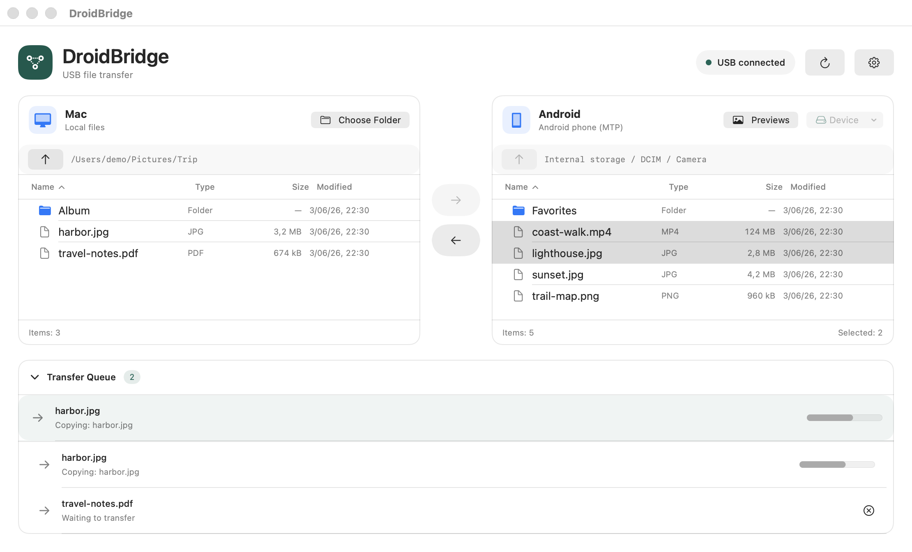

Move files between Android and Mac.
Connect over USB. Browse both devices side by side, preview photos and videos, and copy files or folders in either direction.
Apple Silicon · macOS 26 or later · v0.2.0 preview

Install and connect
Install DroidBridge
We recommend building from source. To try the preview, open the downloaded disk image and drag DroidBridge into Applications.
The preview uses an ad hoc signature and has no Apple notarization. If macOS blocks the first launch and you trust the download, follow Apple’s first-launch instructions.
Connect your phone
Unlock Android, connect it with a USB data cable, and select File transfer (MTP) on the phone. Select files or folders in either pane and use the arrows to copy.